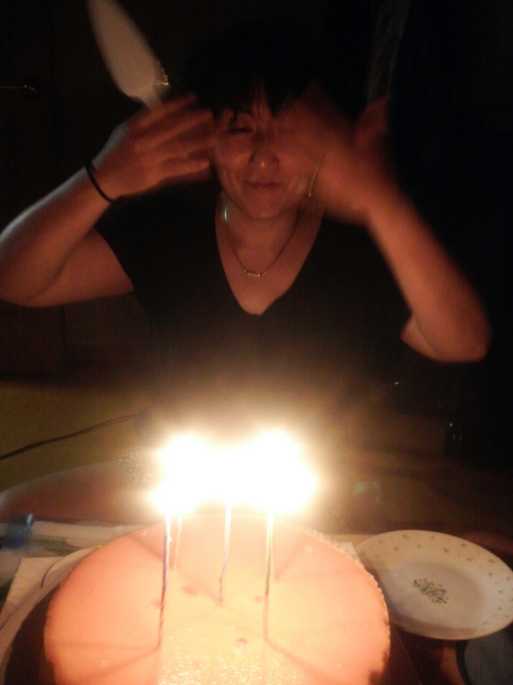

엄마가 어렸을 때 어땠는지는 잘 모르겠다. 좀 궁금하긴 한데 사진 몇장을 볼 땐 나의 어렸을 때 모습과 엄청 닮았다. 그리고 학교는 국민학교, 중학교, 고등학교를 거쳐 대구대학교 도서관학과를 졸업하셨다고 한다. 그 후 컴퓨터를 공부하셔서 학원에서 일하시다가 아빠와 결혼 후 전업주부가 되어 우리 가족을 책임지고 계신다.
이 사진은 2015년 8월 16일에 찍은 사진으로 아마 엄마의 생일축하때 찍은 사진인 것 같다. 치즈케이크가 맛있어보인다. 사진을 보니까 먹고싶어졌다. 요즘 먹고싶은 것이 너무 많아서 큰일이다.